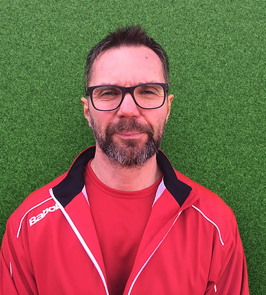
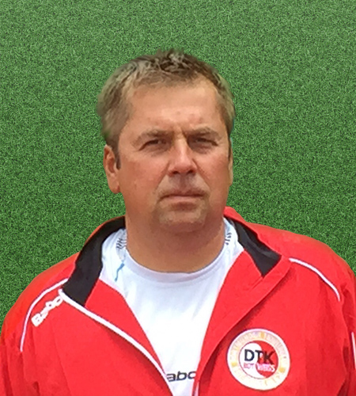

Marler Tennis Akademie
Cоздана в 2005 основой целью академии является развитие и популяризация российской теннисной школы за рубежом. Наша Теннисная Академия создает все необходимые условия для профессиональной подготовки игроков высокого уровня. Развитие индивидуальных качеств игрока, его технических и тактических навыков, общефизической готовности и психологической подготовки являются основными составляющими тренировочного процесса. Видео анализ, теоритические занятия, дополнительные индивидуальные занятия с тренером, а также сопровождение и участие в турнирах различного ранга завершают комплексную организацию этого процесса. Tренерами (ссылка на раздел тренеры) нашей академии накоплен большой опыт тренерской работы, выработаны собственные уникальные методики подготовки, воспитано много игроков любителей и профессионалов. Специализация академии является - профессиональная подготовка и организация тренировочного процесса для всех игроков желающих значительно повысить свой уровень игры. Помимо профессиональной подготовки нашей академией проработанно и организованно обучение детей с юнных лет, начиная с подготовительных занятий для 5-6 летних, переход от них к более интенсивным для 7-10 летних и далее целенаправленным от 11-12 лет. Так же нами организуются турниры и совместные мероприятия с нашими клубами партнерами, проводятся тренировочные сборы. Наша Академия уже сотрудничает с различными учебными заведениями и Теннисными Клубами. Место расположения основной летней тренировочной базы: Germany, Dortmund Johannes-Gronowski str.20 , а также собственной в Germany, Dorsten Midlicher Kamp 11
-

ЦИЛЛИК ИГОРЬ
Тренер по Атлетике и ОФП
-

МЕГЛИНСКАЯ АНАСТАСИЯ
Сертифицированный тренер по теннису. Игрок WTA top 600.
-

ПАЛЕНОВ ДМИТРИЙ
Руководитель Академии
-

СОЛОМАТИН ВЛАДИСЛАВ
Сертифицированный тренер по теннису. Тренер сборной Украины.